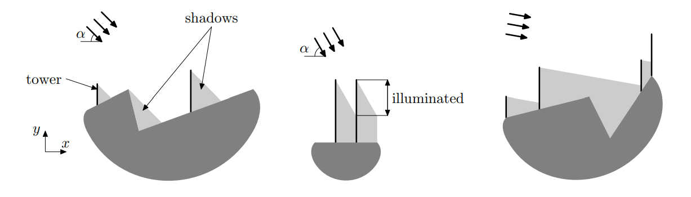

给定一条横坐标递增的二维折线，横坐标范围为 $\left[ x_\min, x_\max \right]$。
你需要建造 $n$ 座塔，第 $i$ 座塔的高度为 $h_i$，每座塔的横坐标必须在 $\left[ x_\min, x_\max \right]$ 中，且底部必须要在折线上。
现在高度角为 $\alpha^\circ$ 的阳光从左侧照射下来，设所有塔被阳光照射到的部分的总长度为 $L$，求 $L$ 的最大值，并给出一组方案。
第一行包含三个正整数 $n, m, \alpha$ ($1 \leq n \leq 10000; 2 \leq m \leq 10000; 1 \leq \alpha \leq 89$)，分别表示塔的个数，折线端点的个数和太阳高度角。
第二行包含 $n$ 个正整数 $h_1, h_2, \cdots, h_n$ ($1 \leq h_i \leq 1000$)，表示各座塔的高度。
最后 $m$ 行，每行两个整数 $x_i, y_i$ ($-10^5 \leq x_i \leq 10^5; -1000 \leq y_i \leq 1000; x_i < x_{i+1}; x_1 = x_\min, x_m = x_\max$)，按照从左到右的顺序描述折线的端点。
第一行输出一个实数，表示 $L$ 的最大值。
接下来 $n$ 行，每行输出以实数，按输入的顺序描述各座塔的横坐标。
你需要保证你输出的 $L$ 距离真实值的绝对误差不超过 $10^{-6}$，构造的方案与 $L$ 的绝对误差不超过 $10^{-9}$。
作切变变换 $\left( x, y \right) \mapsto \left( x, y + \tan \alpha^\circ \cdot x \right)$，则问题转化成 $\alpha = 0$ 时的情形 —— 即太阳光是水平照射的。
此时，设折线在 $x = x_0$ 处的高度为 $y \left( x_0 \right)$ ($x_\min \leq x_0 \leq x_\max$)，则如果有 $x_1 < x_2$ 满足 $y \left( x_1 \right) > y \left( x_2 \right)$，则所有 $x_2$ 处的塔可以移至 $x_1$ 处而不使答案变劣，因此以下不妨假设 $y \left( x \right)$ 随 $x$ 单调递增。
再作伸缩变换，使 $\left( x_\max - x_\min \right) \to 0^+$，则我们就将问题转化了一个一维的模型：
有一个闭区间 $I = \left[ a, b \right]$，你需要放置 $n$ 个闭区间 $I_1, I_2, \cdots, I_n$，满足 $I_i$ 的长度为 $h_i$，且每个区间的左端点都在 $I$ 中，求 $\displaystyle \left| \bigcup_{i=1}^n I_i \right|$ 的最大值。
不妨设 $h = \max \left\{ h_1, h_2, \cdots, h_n \right\}$，考虑集合 $\displaystyle \bigcup_{i=1}^n I_i$ 的右端点 (上确界) 的最大值，不难发现它永远 $\leq b + h$，因此：。
如果 $\displaystyle \sum_{i=1}^n h_i \leq b - a + h$，那么 $\displaystyle \left| \bigcup_{i=1}^n I_i \right| \leq \sum_{i=1}^n h_i \leq b - a + h$，且存在一个 $\displaystyle \left| \bigcup_{i=1}^n I_i \right| = \sum_{i=1}^n h_i$ 的构造。
如果 $\displaystyle \sum_{i=1}^n h_i > b - a + h$，那么显然有 $\displaystyle \left| \bigcup_{i=1}^n I_i \right| \leq b - a + h$ 且存在对应的构造。
具体地，如果我们将所有 $h_i$ 从小到大排序，然后从左到右贪心覆盖 (每次取之前区间右端点与 $b$ 的较小值)，所得到的解一定是最优的。
由于所有的转化都是线性的，因此总时间复杂度为 $O \left( n + m \right)$，具体实现时可以使用双指针。
#include <bits/stdc++.h>
using std::cin;
using std::cout;
typedef std::pair <int, int> pr;
const int N = 10054;
constexpr double eps = 1e-8, deg = 0.01745329251994329577;
struct vec2 {
double x, y;
vec2 (double x0 = 0., double y0 = 0.) : x(x0), y(y0) {}
} p[N];
int n, m = 1, theta;
double k, pos[N];
pr h[N];
inline void up(double &x, const double y) {x < y ? x = y : 0;}
double intersection_y(const vec2 A, const vec2 B, double y) {return (A.x * (y - B.y) + B.x * (A.y - y)) / (A.y - B.y);}
int main() {
int i, j, x, y; double H; vec2 u, v;
std::ios::sync_with_stdio(false), cin.tie(NULL);
cin >> n >> j >> theta, k = tan(theta * deg);
for (i = 0; i < n; ++i) cin >> x, h[i] = pr(x, i);
cin >> x >> y, *p = v = vec2(x, y + k * x);
for (i = 1; i < j; ++i) {
cin >> x >> y, u = v, v = vec2(x, y + k * x);
if (v.y > p[m - 1].y) {
if (p[m - 1].x != u.x) p[m] = vec2(intersection_y(u, v, p[m - 1].y), p[m - 1].y), ++m;
p[m++] = v;
}
}
std::sort(h, h + n), pos[h->second] = p->x, H = p->y + h->first;
for (j = 0, i = 1; i < n; ++i) {
for (; j < m && p[j].y < H; ++j);
if (j == m) pos[h[i].second] = p[m - 1].x, H = p[m - 1].y + h[i].first;
else pos[h[i].second] = intersection_y(p[j - 1], p[j], H), H += h[i].first;
}
cout << std::setprecision(18) << H - p->y << '\n';
for (i = 0; i < n; ++i) cout << pos[i] << '\n';
return 0;
}
坑1：折线的左端点不是 $\left( 0, 0 \right)$，可能是负数。
坑2：本题精度要求较高，而且是绝对误差，因此输出小数位数要多一点。